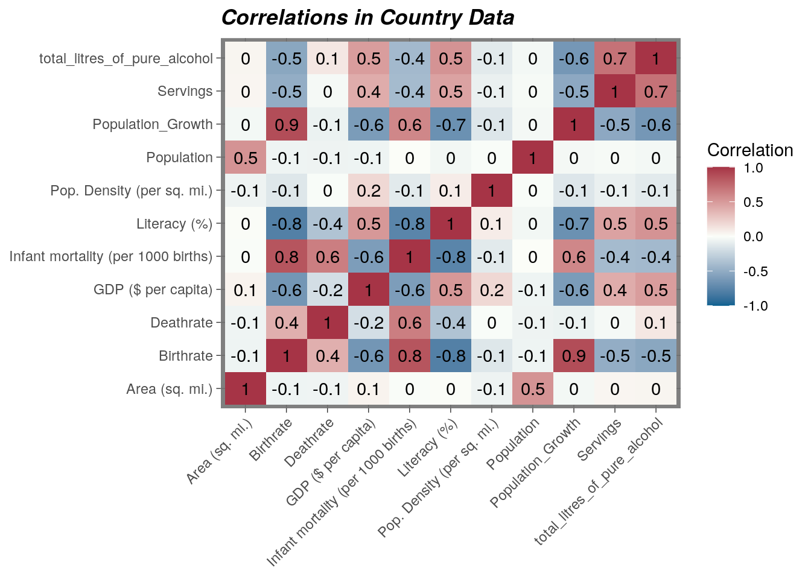
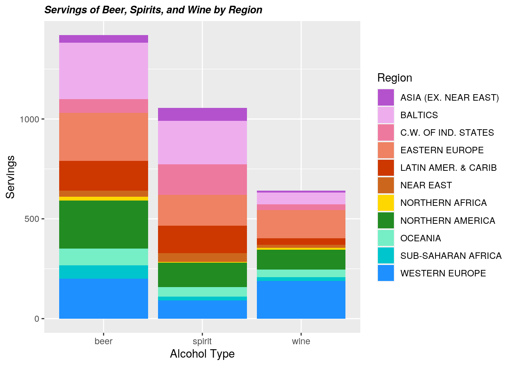
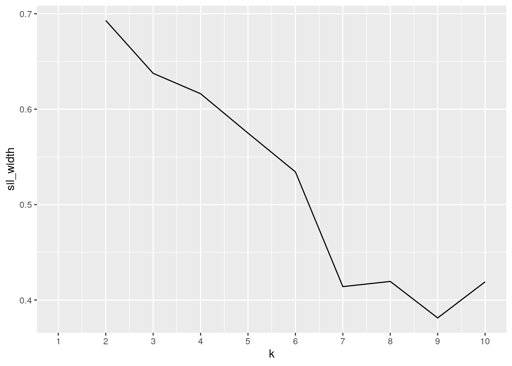
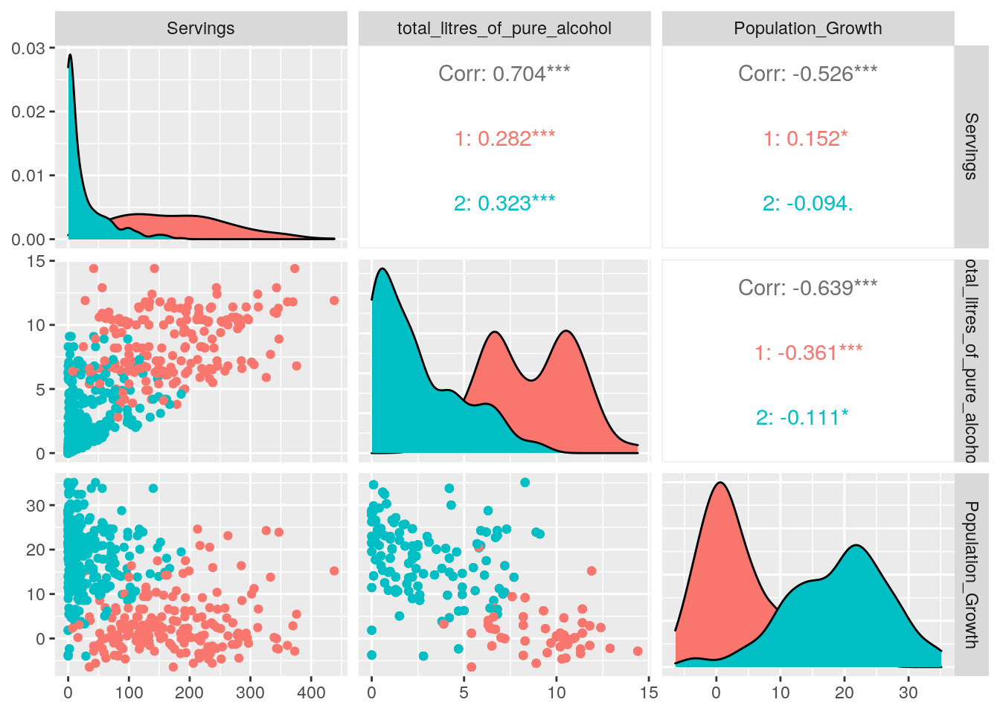

January 1, 0001
Intro
I chose to use the drinks dataset (from fivethirtyeight) and the countries_of_the_world dataset (from kaggle). Both have information about countries (both listed the country name as a variable), which made it easy to join, but the had very different statistics, which made it interesting. The drinks dataset had data about alcohol consumption in each country, while the countries_of_the_world dataset had more normal information (Population, GDP, Birthrate, Deathrate, etc.). I wondered if there would be any interesting correlation between these two sets, and I hypothesized that I would see higher drinking rates with higher population densities, and lower GDPs and Literacy rates.
Downloading and Tidying
library(tidyverse)
library(readr)
countries_of_the_world <- read_csv("countries of the world.csv",
col_types = cols(`Coastline (coast/area ratio)` = col_skip(),
`Net migration` = col_skip(), `Phones (per 1000)` = col_skip(),
`Arable (%)` = col_skip(), `Crops (%)` = col_skip(),
`Other (%)` = col_skip(), Climate = col_skip(), Agriculture = col_skip(),
Industry = col_skip(), Service = col_skip()))
library(fivethirtyeight)
library(kableExtra)
drinks <- drinks %>% pivot_longer(cols = c(beer_servings:wine_servings),
names_to = "Alcohol_Type", values_to = "Servings") %>% separate(Alcohol_Type,
into = c("Alcohol_Type", "servingsname")) %>% select(-servingsname)In this step, I downloaded the two datests and tidyd the drinks dataset before joining it in the next step. I used pivot_longer to condense the 3 columns “beer_servings”, “spirit_servings” and “wine_servings” (which each had numerical entries of servings per person for each country) into two columns, “Alcohol_Type” (categorical) and “Servings” (numeric).
Side Note: As you can see from the code when I downloaded the “countries_of_the_world” dataset, I dropped several variables. I did this to get rid of extraneous data that was unnecessary and that I didn’t plan on using, just to clean up the dataset before I started the project. This data didn’t pertain to any of the data that I kept, and thus couldn’t have been tidyd into a more usable form.
Joining
countrydata <- countries_of_the_world %>% inner_join(drinks,
by = c(Country = "country"))
countrydata## # A tibble: 522 x 13
## Country Region Population `Area (sq. mi.)` `Pop. Density (… `Infant mortali…
## <chr> <chr> <dbl> <dbl> <dbl> <dbl>
## 1 Afghani… ASIA … 31056997 647500 48 163.
## 2 Afghani… ASIA … 31056997 647500 48 163.
## 3 Afghani… ASIA … 31056997 647500 48 163.
## 4 Albania EASTE… 3581655 28748 125. 21.5
## 5 Albania EASTE… 3581655 28748 125. 21.5
## 6 Albania EASTE… 3581655 28748 125. 21.5
## 7 Algeria NORTH… 32930091 2381740 13.8 31
## 8 Algeria NORTH… 32930091 2381740 13.8 31
## 9 Algeria NORTH… 32930091 2381740 13.8 31
## 10 Andorra WESTE… 71201 468 152. 4.05
## # … with 512 more rows, and 7 more variables: GDP ($ per capita) <dbl>,
## # Literacy (%) <dbl>, Birthrate <dbl>, Deathrate <dbl>,
## # total_litres_of_pure_alcohol <dbl>, Alcohol_Type <chr>, Servings <int>countrydata %>% head() %>% kbl() %>% kable_styling(bootstrap_options = c("striped",
"hover", "responsive"))| Country | Region | Population | Area (sq. mi.) | Pop. Density (per sq. mi.) | Infant mortality (per 1000 births) | GDP ($ per capita) | Literacy (%) | Birthrate | Deathrate | total_litres_of_pure_alcohol | Alcohol_Type | Servings |
|---|---|---|---|---|---|---|---|---|---|---|---|---|
| Afghanistan | ASIA (EX. NEAR EAST) | 31056997 | 647500 | 48.0 | 163.07 | 700 | 36.0 | 46.60 | 20.34 | 0.0 | beer | 0 |
| Afghanistan | ASIA (EX. NEAR EAST) | 31056997 | 647500 | 48.0 | 163.07 | 700 | 36.0 | 46.60 | 20.34 | 0.0 | spirit | 0 |
| Afghanistan | ASIA (EX. NEAR EAST) | 31056997 | 647500 | 48.0 | 163.07 | 700 | 36.0 | 46.60 | 20.34 | 0.0 | wine | 0 |
| Albania | EASTERN EUROPE | 3581655 | 28748 | 124.6 | 21.52 | 4500 | 86.5 | 15.11 | 5.22 | 4.9 | beer | 89 |
| Albania | EASTERN EUROPE | 3581655 | 28748 | 124.6 | 21.52 | 4500 | 86.5 | 15.11 | 5.22 | 4.9 | spirit | 132 |
| Albania | EASTERN EUROPE | 3581655 | 28748 | 124.6 | 21.52 | 4500 | 86.5 | 15.11 | 5.22 | 4.9 | wine | 54 |
Here, I joined the datasets to create “countrydata”. The “countries_of_the_world” dataset had 10 variables (including country name) and 227 entries (meaning 227 countries listed). The “drinks” dataset had 4 variables (including country name) and 579 entries (meaning 193 countries listed). I joined the two datasets using an inner join, so that there would be full data (both about the country in general and about it’s drinking data) for all the countries in the joined dataset. This joined dataset has 13 variables and 522 entries, meaning there were 174 matches in country names and 72 country names that didn’t match/weren’t in both datasets.
Summary Statistics
Population
countrydata %>% group_by(Region) %>% summarise(n = n_distinct(Country),
MeanPopulation = mean(Population, na.rm = T), TotalPopulation = sum(Population)) %>%
arrange(TotalPopulation) %>% kbl() %>% kable_styling(bootstrap_options = c("striped",
"hover", "condensed"))| Region | n | MeanPopulation | TotalPopulation |
|---|---|---|---|
| BALTICS | 3 | 2394991 | 21554922 |
| OCEANIA | 14 | 2300181 | 96607611 |
| NORTHERN AMERICA | 1 | 33098932 | 99296796 |
| EASTERN EUROPE | 11 | 10492340 | 346247223 |
| C.W. OF IND. STATES | 11 | 12471637 | 411564024 |
| NORTHERN AFRICA | 5 | 32226825 | 483402375 |
| NEAR EAST | 14 | 13655652 | 573537384 |
| WESTERN EUROPE | 22 | 17999950 | 1187996709 |
| LATIN AMER. & CARIB | 29 | 19160861 | 1666994868 |
| SUB-SAHARAN AFRICA | 43 | 15714231 | 2027135748 |
| ASIA (EX. NEAR EAST) | 21 | 168435588 | 10611442020 |
Here is a general look at the mean and total population for each region. (Table 1)
Area
countrydata %>% group_by(Region) %>% summarise(n = n_distinct(Country),
MeanArea = mean(`Area (sq. mi.)`, na.rm = T), TotalArea = sum(`Area (sq. mi.)`)) %>%
arrange(TotalArea) %>% kbl() %>% kable_styling(bootstrap_options = c("striped",
"hover", "condensed"))| Region | n | MeanArea | TotalArea |
|---|---|---|---|
| BALTICS | 3 | 58338.33 | 525045 |
| EASTERN EUROPE | 11 | 100099.36 | 3303279 |
| WESTERN EUROPE | 22 | 168552.09 | 11124438 |
| NEAR EAST | 14 | 310669.00 | 13048098 |
| C.W. OF IND. STATES | 11 | 456876.64 | 15076929 |
| NORTHERN AFRICA | 5 | 1150578.00 | 17258670 |
| OCEANIA | 14 | 606742.29 | 25483176 |
| NORTHERN AMERICA | 1 | 9984670.00 | 29954010 |
| LATIN AMER. & CARIB | 29 | 704037.79 | 61251288 |
| SUB-SAHARAN AFRICA | 43 | 488659.88 | 63037125 |
| ASIA (EX. NEAR EAST) | 21 | 1054623.10 | 66441255 |
Here is a general look at the mean and total area (in square miles) for each region. (Table 2)
Population Density
countrydata %>% group_by(Region) %>% summarise(n = n_distinct(Country),
MeanPopDensity = mean(`Pop. Density (per sq. mi.)`, na.rm = T),
SD = sd(`Pop. Density (per sq. mi.)`, na.rm = T), Min. = min(`Pop. Density (per sq. mi.)`,
na.rm = T), Max. = max(`Pop. Density (per sq. mi.)`,
na.rm = T), `25%` = quantile(`Pop. Density (per sq. mi.)`,
na.rm = T, probs = c(0.25)), `75%` = quantile(`Pop. Density (per sq. mi.)`,
na.rm = T, probs = c(0.75))) %>% arrange(MeanPopDensity) %>%
kbl() %>% kable_styling(bootstrap_options = c("striped",
"hover", "condensed"))| Region | n | MeanPopDensity | SD | Min. | Max. | 25% | 75% |
|---|---|---|---|---|---|---|---|
| NORTHERN AMERICA | 1 | 3.30000 | 0.00000 | 3.3 | 3.3 | 3.3 | 3.3 |
| BALTICS | 3 | 39.83333 | 11.65837 | 29.3 | 55.0 | 29.3 | 55.0 |
| NORTHERN AFRICA | 5 | 46.52000 | 32.71660 | 3.4 | 78.8 | 13.8 | 74.4 |
| C.W. OF IND. STATES | 11 | 61.10000 | 37.35274 | 5.6 | 132.0 | 26.3 | 91.9 |
| SUB-SAHARAN AFRICA | 43 | 82.37674 | 114.40402 | 2.5 | 608.3 | 16.5 | 93.6 |
| EASTERN EUROPE | 11 | 102.07273 | 19.72524 | 66.6 | 129.8 | 80.9 | 123.3 |
| LATIN AMER. & CARIB | 29 | 109.80690 | 139.37827 | 2.7 | 649.5 | 21.3 | 156.0 |
| OCEANIA | 14 | 120.40000 | 183.69628 | 2.6 | 632.7 | 15.2 | 130.0 |
| NEAR EAST | 14 | 174.61429 | 266.41056 | 13.8 | 1050.5 | 40.6 | 135.7 |
| ASIA (EX. NEAR EAST) | 21 | 543.22381 | 1372.46453 | 1.8 | 6482.2 | 65.8 | 308.2 |
| WESTERN EUROPE | 22 | 939.34545 | 3381.62645 | 2.9 | 16271.5 | 80.0 | 247.6 |
The table above shows the mean, standard deviation, minimum value, maximum value, and the 25% and 75% quantile values for population density in each region, as well as the number of countries contributing to each region. (Table 3)
countrydata %>% distinct(Country, .keep_all = TRUE) %>% select(Country,
`Pop. Density (per sq. mi.)`, total_litres_of_pure_alcohol) %>%
arrange(`Pop. Density (per sq. mi.)`) %>% head(10) %>% kbl() %>%
kable_styling(bootstrap_options = c("striped", "hover", "condensed"))| Country | Pop. Density (per sq. mi.) | total_litres_of_pure_alcohol |
|---|---|---|
| Mongolia | 1.8 | 4.9 |
| Namibia | 2.5 | 6.8 |
| Australia | 2.6 | 10.4 |
| Botswana | 2.7 | 5.4 |
| Suriname | 2.7 | 5.6 |
| Iceland | 2.9 | 6.6 |
| Mauritania | 3.1 | 0.0 |
| Canada | 3.3 | 8.2 |
| Libya | 3.4 | 0.0 |
| Guyana | 3.6 | 7.1 |
countrydata %>% distinct(Country, .keep_all = TRUE) %>% filter(Region ==
"WESTERN EUROPE") %>% select(Country, `Pop. Density (per sq. mi.)`,
total_litres_of_pure_alcohol) %>% arrange(`Pop. Density (per sq. mi.)`) %>%
head(10) %>% kbl() %>% kable_styling(bootstrap_options = c("striped",
"hover", "condensed"))| Country | Pop. Density (per sq. mi.) | total_litres_of_pure_alcohol |
|---|---|---|
| Iceland | 2.9 | 6.6 |
| Norway | 14.2 | 6.7 |
| Finland | 15.5 | 10.0 |
| Sweden | 20.0 | 7.2 |
| Ireland | 57.8 | 11.4 |
| Spain | 80.0 | 10.0 |
| Greece | 81.0 | 8.3 |
| Austria | 97.7 | 9.7 |
| France | 111.3 | 11.8 |
| Portugal | 114.8 | 11.0 |
These two tables (above) show population density and total alcohol consumption per person (in liters) side by side. The top table shows the data for all countries, while the bottom table shows the data only for countries in Western Europe (the region with the highest mean population density). (Tables 3a and 3b)
Infant Mortality
countrydata %>% group_by(Region) %>% summarise(n = n_distinct(Country),
MeanInfantMortality = mean(`Infant mortality (per 1000 births)`,
na.rm = T), SD = sd(`Infant mortality (per 1000 births)`,
na.rm = T), Min. = min(`Infant mortality (per 1000 births)`,
na.rm = T), Max. = max(`Infant mortality (per 1000 births)`,
na.rm = T), `25%` = quantile(`Infant mortality (per 1000 births)`,
na.rm = T, probs = c(0.25)), `75%` = quantile(`Infant mortality (per 1000 births)`,
na.rm = T, probs = c(0.75))) %>% arrange(MeanInfantMortality) %>%
kbl() %>% kable_styling(bootstrap_options = c("striped",
"hover", "condensed"))| Region | n | MeanInfantMortality | SD | Min. | Max. | 25% | 75% |
|---|---|---|---|---|---|---|---|
| WESTERN EUROPE | 22 | 4.568182 | 0.8058362 | 2.77 | 5.94 | 4.05 | 5.16 |
| NORTHERN AMERICA | 1 | 4.750000 | 0.0000000 | 4.75 | 4.75 | 4.75 | 4.75 |
| BALTICS | 3 | 8.103333 | 1.1650322 | 6.89 | 9.55 | 6.89 | 9.55 |
| EASTERN EUROPE | 11 | 11.926364 | 7.3107655 | 3.93 | 26.43 | 6.84 | 20.55 |
| NEAR EAST | 14 | 23.677857 | 16.0667821 | 7.03 | 61.50 | 13.24 | 29.53 |
| OCEANIA | 14 | 24.167692 | 16.9391326 | 4.69 | 55.16 | 12.62 | 29.45 |
| LATIN AMER. & CARIB | 29 | 24.342069 | 13.4878528 | 6.33 | 73.45 | 14.62 | 29.32 |
| NORTHERN AFRICA | 5 | 30.916000 | 6.4650177 | 24.60 | 41.62 | 24.77 | 32.59 |
| C.W. OF IND. STATES | 11 | 47.048182 | 30.9740090 | 13.37 | 110.76 | 20.34 | 73.08 |
| ASIA (EX. NEAR EAST) | 21 | 48.111429 | 37.6353090 | 2.29 | 163.07 | 20.48 | 66.98 |
| SUB-SAHARAN AFRICA | 43 | 83.569302 | 32.2900584 | 15.03 | 191.19 | 62.50 | 98.80 |
The table above shows the mean, standard deviation, minimum value, maximum value, and the 25% and 75% quantile values for infant mortality in each region, as well as the number of countries contributing to each region. (Table 4)
GDP
countrydata %>% group_by(Region) %>% summarise(n = n_distinct(Country),
MeanGDP = mean(`GDP ($ per capita)`, na.rm = T), SD = sd(`GDP ($ per capita)`,
na.rm = T), Min. = min(`GDP ($ per capita)`, na.rm = T),
Max. = max(`GDP ($ per capita)`, na.rm = T), `25%` = quantile(`GDP ($ per capita)`,
na.rm = T, probs = c(0.25)), `75%` = quantile(`GDP ($ per capita)`,
na.rm = T, probs = c(0.75))) %>% arrange(MeanGDP) %>%
kbl() %>% kable_styling(bootstrap_options = c("striped",
"hover", "condensed"))| Region | n | MeanGDP | SD | Min. | Max. | 25% | 75% |
|---|---|---|---|---|---|---|---|
| SUB-SAHARAN AFRICA | 43 | 2372.093 | 2744.4540 | 500 | 11400 | 800 | 2100 |
| C.W. OF IND. STATES | 11 | 3554.545 | 1947.7697 | 1000 | 6300 | 1700 | 5800 |
| NORTHERN AFRICA | 5 | 5460.000 | 1268.7452 | 4000 | 6900 | 4000 | 6400 |
| LATIN AMER. & CARIB | 29 | 6213.793 | 3435.2540 | 1600 | 15700 | 4000 | 9000 |
| ASIA (EX. NEAR EAST) | 21 | 6309.524 | 7535.3942 | 700 | 28200 | 1900 | 7000 |
| OCEANIA | 14 | 6678.571 | 8135.3050 | 800 | 29000 | 1700 | 5800 |
| EASTERN EUROPE | 11 | 10145.455 | 4914.9066 | 2200 | 19000 | 6700 | 13900 |
| BALTICS | 3 | 11300.000 | 912.4144 | 10200 | 12300 | 10200 | 12300 |
| NEAR EAST | 14 | 11850.000 | 7899.8997 | 800 | 23200 | 4300 | 19200 |
| WESTERN EUROPE | 22 | 28500.000 | 7771.9614 | 17700 | 55100 | 26700 | 30900 |
| NORTHERN AMERICA | 1 | 29800.000 | 0.0000 | 29800 | 29800 | 29800 | 29800 |
The table above shows the mean, standard deviation, minimum value, maximum value, and the 25% and 75% quantile values for GDP in each region, as well as the number of countries contributing to each region. (Table 5)
countrydata %>% distinct(Country, .keep_all = TRUE) %>% select(Country,
`GDP ($ per capita)`, total_litres_of_pure_alcohol) %>% arrange(`GDP ($ per capita)`) %>%
head(10) %>% kbl() %>% kable_styling(bootstrap_options = c("striped",
"hover", "condensed"))| Country | GDP ($ per capita) | total_litres_of_pure_alcohol |
|---|---|---|
| Sierra Leone | 500 | 6.7 |
| Somalia | 500 | 0.0 |
| Burundi | 600 | 6.3 |
| Malawi | 600 | 1.5 |
| Tanzania | 600 | 5.7 |
| Afghanistan | 700 | 0.0 |
| Comoros | 700 | 0.1 |
| Eritrea | 700 | 0.5 |
| Ethiopia | 700 | 0.7 |
| Guinea-Bissau | 800 | 2.5 |
countrydata %>% distinct(Country, .keep_all = TRUE) %>% filter(Region ==
"SUB-SAHARAN AFRICA") %>% select(Country, `GDP ($ per capita)`,
total_litres_of_pure_alcohol) %>% arrange(`GDP ($ per capita)`) %>%
head(10) %>% kbl() %>% kable_styling(bootstrap_options = c("striped",
"hover", "condensed"))| Country | GDP ($ per capita) | total_litres_of_pure_alcohol |
|---|---|---|
| Sierra Leone | 500 | 6.7 |
| Somalia | 500 | 0.0 |
| Burundi | 600 | 6.3 |
| Malawi | 600 | 1.5 |
| Tanzania | 600 | 5.7 |
| Comoros | 700 | 0.1 |
| Eritrea | 700 | 0.5 |
| Ethiopia | 700 | 0.7 |
| Guinea-Bissau | 800 | 2.5 |
| Madagascar | 800 | 0.8 |
These two tables (above) show GDP and total alcohol consumption per person (in liters) side by side. The top table shows the data for all countries, while the bottom table shows the data only for countries in Sub-Saharan Africa (the region with the lowest mean GDP). (Tables 5a and 5b)
Literacy
countrydata %>% group_by(Region) %>% summarise(n = n_distinct(Country),
MeanLiteracy = mean(`Literacy (%)`, na.rm = T), SD = sd(`Literacy (%)`,
na.rm = T), Min. = min(`Literacy (%)`, na.rm = T), Max. = max(`Literacy (%)`,
na.rm = T), `25%` = quantile(`Literacy (%)`, na.rm = T,
probs = c(0.25)), `75%` = quantile(`Literacy (%)`, na.rm = T,
probs = c(0.75))) %>% arrange(MeanLiteracy) %>% kbl() %>%
kable_styling(bootstrap_options = c("striped", "hover", "condensed"))| Region | n | MeanLiteracy | SD | Min. | Max. | 25% | 75% |
|---|---|---|---|---|---|---|---|
| SUB-SAHARAN AFRICA | 43 | 60.99070 | 18.8930892 | 17.6 | 90.7 | 42.7 | 79.3 |
| NORTHERN AFRICA | 5 | 67.24000 | 11.5680471 | 51.7 | 82.6 | 57.7 | 74.2 |
| ASIA (EX. NEAR EAST) | 21 | 76.31429 | 21.6663695 | 36.0 | 99.0 | 59.5 | 92.6 |
| NEAR EAST | 14 | 79.52143 | 15.6774428 | 40.4 | 97.6 | 76.9 | 89.1 |
| OCEANIA | 14 | 88.92000 | 15.7771638 | 53.0 | 100.0 | 92.0 | 99.0 |
| LATIN AMER. & CARIB | 29 | 89.27241 | 10.5434945 | 52.9 | 98.8 | 87.2 | 96.2 |
| NORTHERN AMERICA | 1 | 97.00000 | 0.0000000 | 97.0 | 97.0 | 97.0 | 97.0 |
| EASTERN EUROPE | 11 | 97.08889 | 4.3267801 | 86.5 | 99.9 | 98.4 | 99.7 |
| WESTERN EUROPE | 22 | 98.31818 | 1.9469826 | 92.8 | 100.0 | 98.0 | 99.9 |
| C.W. OF IND. STATES | 11 | 98.64545 | 0.9310917 | 97.0 | 99.7 | 98.0 | 99.4 |
| BALTICS | 3 | 99.73333 | 0.1000000 | 99.6 | 99.8 | 99.6 | 99.8 |
The table above shows the mean, standard deviation, minimum value, maximum value, and the 25% and 75% quantile values for literacy rates in each region, as well as the number of countries contributing to each region. (Table 6)
countrydata %>% distinct(Country, .keep_all = TRUE) %>% select(Country,
`Literacy (%)`, total_litres_of_pure_alcohol) %>% arrange(`Literacy (%)`) %>%
head(10) %>% kbl() %>% kable_styling(bootstrap_options = c("striped",
"hover", "condensed"))| Country | Literacy (%) | total_litres_of_pure_alcohol |
|---|---|---|
| Niger | 17.6 | 0.1 |
| Burkina Faso | 26.6 | 4.3 |
| Sierra Leone | 31.4 | 6.7 |
| Guinea | 35.9 | 0.2 |
| Afghanistan | 36.0 | 0.0 |
| Somalia | 37.8 | 0.0 |
| Senegal | 40.2 | 0.3 |
| Iraq | 40.4 | 0.2 |
| Benin | 40.9 | 1.1 |
| Mauritania | 41.7 | 0.0 |
The table above shows the literacy rate and total alcohol consumption per person (in liters) side by side. (Table 6a)
Birthrate
countrydata %>% group_by(Region) %>% summarise(n = n_distinct(Country),
MeanBirthrate = mean(Birthrate, na.rm = T), SD = sd(Birthrate,
na.rm = T), Min. = min(Birthrate, na.rm = T), Max. = max(Birthrate,
na.rm = T), `25%` = quantile(Birthrate, na.rm = T, probs = c(0.25)),
`75%` = quantile(Birthrate, na.rm = T, probs = c(0.75))) %>%
arrange(MeanBirthrate) %>% kbl() %>% kable_styling(bootstrap_options = c("striped",
"hover", "condensed"))| Region | n | MeanBirthrate | SD | Min. | Max. | 25% | 75% |
|---|---|---|---|---|---|---|---|
| BALTICS | 3 | 9.343333 | 0.5639371 | 8.75 | 10.04 | 8.75 | 10.04 |
| WESTERN EUROPE | 22 | 10.515455 | 1.5105620 | 8.25 | 14.45 | 9.68 | 11.13 |
| EASTERN EUROPE | 11 | 10.531000 | 1.7809826 | 8.98 | 15.11 | 9.61 | 10.70 |
| NORTHERN AMERICA | 1 | 10.780000 | 0.0000000 | 10.78 | 10.78 | 10.78 | 10.78 |
| C.W. OF IND. STATES | 11 | 18.574545 | 7.7271943 | 8.82 | 32.65 | 11.16 | 26.36 |
| NORTHERN AFRICA | 5 | 20.814000 | 4.1305773 | 15.52 | 26.49 | 17.14 | 22.94 |
| LATIN AMER. & CARIB | 29 | 20.833793 | 5.8197785 | 11.89 | 36.44 | 16.73 | 23.30 |
| OCEANIA | 14 | 23.000714 | 6.2506516 | 12.14 | 33.05 | 18.03 | 29.36 |
| ASIA (EX. NEAR EAST) | 21 | 23.507143 | 9.4432947 | 9.34 | 46.60 | 16.86 | 29.80 |
| NEAR EAST | 14 | 23.527857 | 8.5901519 | 12.56 | 42.89 | 17.80 | 29.34 |
| SUB-SAHARAN AFRICA | 43 | 36.787209 | 8.5196513 | 15.43 | 50.73 | 33.89 | 42.22 |
The table above shows the mean, standard deviation, minimum value, maximum value, and the 25% and 75% quantile values for birthrate in each region, as well as the number of countries contributing to each region. (Table 7)
Deathrate
countrydata %>% group_by(Region) %>% summarise(n = n_distinct(Country),
MeanDeathrate = mean(Deathrate, na.rm = T), SD = sd(Deathrate,
na.rm = T), Min. = min(Deathrate, na.rm = T), Max. = max(Deathrate,
na.rm = T), `25%` = quantile(Deathrate, na.rm = T, probs = c(0.25)),
`75%` = quantile(Deathrate, na.rm = T, probs = c(0.75))) %>%
arrange(MeanDeathrate) %>% kbl() %>% kable_styling(bootstrap_options = c("striped",
"hover", "condensed"))| Region | n | MeanDeathrate | SD | Min. | Max. | 25% | 75% |
|---|---|---|---|---|---|---|---|
| NORTHERN AFRICA | 5 | 4.806000 | 0.7578899 | 3.48 | 5.58 | 4.61 | 5.23 |
| NEAR EAST | 14 | 4.945000 | 1.7672126 | 2.41 | 8.30 | 3.81 | 6.18 |
| LATIN AMER. & CARIB | 29 | 6.477931 | 1.8592935 | 4.23 | 12.17 | 5.28 | 7.27 |
| OCEANIA | 14 | 6.556154 | 1.2497802 | 3.92 | 8.26 | 5.65 | 7.51 |
| NORTHERN AMERICA | 1 | 7.800000 | 0.0000000 | 7.80 | 7.80 | 7.80 | 7.80 |
| ASIA (EX. NEAR EAST) | 21 | 7.978571 | 3.5445041 | 3.45 | 20.34 | 6.22 | 9.06 |
| WESTERN EUROPE | 22 | 9.375455 | 1.4474223 | 6.25 | 12.91 | 8.41 | 10.31 |
| C.W. OF IND. STATES | 11 | 9.950000 | 2.4631116 | 7.08 | 14.39 | 8.23 | 12.64 |
| EASTERN EUROPE | 11 | 10.486000 | 2.4065952 | 5.22 | 14.27 | 9.45 | 11.77 |
| BALTICS | 3 | 12.630000 | 1.2501700 | 10.98 | 13.66 | 10.98 | 13.66 |
| SUB-SAHARAN AFRICA | 43 | 16.041628 | 5.9554781 | 6.29 | 29.74 | 12.16 | 19.93 |
The table above shows the mean, standard deviation, minimum value, maximum value, and the 25% and 75% quantile values for deathrate in each region, as well as the number of countries contributing to each region. (Table 8)
countrydata <- countrydata %>% mutate(Population_Growth = Birthrate -
Deathrate) %>% select(1:Deathrate, Population_Growth, everything())
countrydata %>% distinct(Country, .keep_all = TRUE) %>% select(Country,
Birthrate, Deathrate, Population_Growth) %>% head(10) %>%
kbl() %>% kable_styling(bootstrap_options = c("striped",
"hover", "condensed"))| Country | Birthrate | Deathrate | Population_Growth |
|---|---|---|---|
| Afghanistan | 46.60 | 20.34 | 26.26 |
| Albania | 15.11 | 5.22 | 9.89 |
| Algeria | 17.14 | 4.61 | 12.53 |
| Andorra | 8.71 | 6.25 | 2.46 |
| Angola | 45.11 | 24.20 | 20.91 |
| Antigua & Barbuda | 16.93 | 5.37 | 11.56 |
| Argentina | 16.73 | 7.55 | 9.18 |
| Armenia | 12.07 | 8.23 | 3.84 |
| Australia | 12.14 | 7.51 | 4.63 |
| Austria | 8.74 | 9.76 | -1.02 |
The above table shows the new variable, “Population_Growth”, which subtracts the deathrate from the birthrate to determine whether the population is growing or diminishing and at what value. (Table 8a)
Beer Consumption
countrydata %>% group_by(Region) %>% filter(Alcohol_Type == "beer") %>%
summarise(n = n(), MeanBeerServings = mean(Servings), SD = sd(Servings),
Min. = min(Servings), Max. = max(Servings), `25%` = quantile(Servings,
probs = c(0.25)), `75%` = quantile(Servings, probs = c(0.75))) %>%
arrange(MeanBeerServings) %>% kbl() %>% kable_styling(bootstrap_options = c("striped",
"hover", "condensed"))| Region | n | MeanBeerServings | SD | Min. | Max. | 25% | 75% |
|---|---|---|---|---|---|---|---|
| NORTHERN AFRICA | 5 | 18.80000 | 20.24105 | 0 | 51 | 6.00 | 25.0 |
| NEAR EAST | 14 | 30.92857 | 50.47843 | 0 | 192 | 5.25 | 37.0 |
| ASIA (EX. NEAR EAST) | 21 | 37.85714 | 37.35276 | 0 | 111 | 5.00 | 71.0 |
| SUB-SAHARAN AFRICA | 43 | 67.13953 | 86.27271 | 0 | 376 | 16.50 | 85.0 |
| C.W. OF IND. STATES | 11 | 68.36364 | 66.32085 | 2 | 206 | 21.00 | 116.5 |
| OCEANIA | 14 | 84.64286 | 99.73242 | 0 | 306 | 21.00 | 98.0 |
| LATIN AMER. & CARIB | 29 | 150.00000 | 78.45836 | 1 | 333 | 93.00 | 197.0 |
| WESTERN EUROPE | 22 | 199.18182 | 91.93146 | 0 | 346 | 149.75 | 260.0 |
| EASTERN EUROPE | 11 | 240.00000 | 86.11504 | 89 | 361 | 213.00 | 290.0 |
| NORTHERN AMERICA | 1 | 240.00000 | NA | 240 | 240 | 240.00 | 240.0 |
| BALTICS | 3 | 282.66667 | 59.51750 | 224 | 343 | 252.50 | 312.0 |
The table above shows the mean, standard deviation, minimum value, maximum value, and the 25% and 75% quantile values for beer consumption per person (in servings) in each region, as well as the number of countries contributing to each region. (Table 9)
Spirits Consumption
countrydata %>% group_by(Region) %>% filter(Alcohol_Type == "spirit") %>%
summarise(n = n(), MeanSpiritsServings = mean(Servings),
SD = sd(Servings), Min. = min(Servings), Max. = max(Servings),
`25%` = quantile(Servings, probs = c(0.25)), `75%` = quantile(Servings,
probs = c(0.75))) %>% arrange(MeanSpiritsServings) %>%
kbl() %>% kable_styling(bootstrap_options = c("striped",
"hover", "condensed"))| Region | n | MeanSpiritsServings | SD | Min. | Max. | 25% | 75% |
|---|---|---|---|---|---|---|---|
| NORTHERN AFRICA | 5 | 2.60000 | 2.607681 | 0 | 6 | 0.00 | 4.0 |
| SUB-SAHARAN AFRICA | 43 | 18.39535 | 29.863291 | 0 | 152 | 1.50 | 23.5 |
| NEAR EAST | 14 | 44.28571 | 48.391717 | 0 | 154 | 7.75 | 61.0 |
| OCEANIA | 14 | 48.92857 | 63.963288 | 0 | 254 | 18.00 | 57.5 |
| ASIA (EX. NEAR EAST) | 21 | 63.66667 | 88.788701 | 0 | 258 | 0.00 | 114.0 |
| WESTERN EUROPE | 22 | 91.54545 | 43.168250 | 0 | 157 | 68.00 | 124.0 |
| NORTHERN AMERICA | 1 | 122.00000 | NA | 122 | 122 | 122.00 | 122.0 |
| LATIN AMER. & CARIB | 29 | 137.65517 | 93.206482 | 25 | 438 | 76.00 | 156.0 |
| C.W. OF IND. STATES | 11 | 153.72727 | 107.689453 | 15 | 373 | 84.00 | 231.5 |
| EASTERN EUROPE | 11 | 154.09091 | 83.598391 | 27 | 293 | 104.50 | 215.0 |
| BALTICS | 3 | 218.00000 | 25.059928 | 194 | 244 | 205.00 | 230.0 |
The table above shows the mean, standard deviation, minimum value, maximum value, and the 25% and 75% quantile values for spirits consumption per person (in servings) in each region, as well as the number of countries contributing to each region. (Table 10)
Wine Consumption
countrydata %>% group_by(Region) %>% filter(Alcohol_Type == "wine") %>%
summarise(n = n(), MeanWineServings = mean(Servings), SD = sd(Servings),
Min. = min(Servings), Max. = max(Servings), `25%` = quantile(Servings,
probs = c(0.25)), `75%` = quantile(Servings, probs = c(0.75))) %>%
arrange(MeanWineServings) %>% kbl() %>% kable_styling(bootstrap_options = c("striped",
"hover", "condensed"))| Region | n | MeanWineServings | SD | Min. | Max. | 25% | 75% |
|---|---|---|---|---|---|---|---|
| ASIA (EX. NEAR EAST) | 21 | 8.142857 | 26.689484 | 0 | 123 | 0.00 | 1.00 |
| NORTHERN AFRICA | 5 | 9.000000 | 8.544004 | 0 | 20 | 1.00 | 14.00 |
| NEAR EAST | 14 | 14.071429 | 29.702277 | 0 | 113 | 0.25 | 8.50 |
| SUB-SAHARAN AFRICA | 43 | 18.348837 | 42.810704 | 0 | 233 | 1.00 | 11.50 |
| C.W. OF IND. STATES | 11 | 29.818182 | 42.364651 | 0 | 149 | 7.00 | 37.00 |
| LATIN AMER. & CARIB | 29 | 33.241379 | 61.719212 | 1 | 221 | 3.00 | 26.00 |
| OCEANIA | 14 | 38.928571 | 68.628839 | 0 | 212 | 1.00 | 23.75 |
| BALTICS | 3 | 59.000000 | 3.000000 | 56 | 62 | 57.50 | 60.50 |
| NORTHERN AMERICA | 1 | 100.000000 | NA | 100 | 100 | 100.00 | 100.00 |
| EASTERN EUROPE | 11 | 140.818182 | 73.826578 | 54 | 276 | 90.00 | 176.00 |
| WESTERN EUROPE | 22 | 188.863636 | 98.640422 | 0 | 370 | 122.25 | 262.50 |
The table above shows the mean, standard deviation, minimum value, maximum value, and the 25% and 75% quantile values for wine consumption per person (in servings) in each region, as well as the number of countries contributing to each region. (Table 11)
Total Alcohol Consumption
countrydata %>% group_by(Region) %>% summarise(n = n_distinct(Country),
MeanTotalAlcohol = mean(total_litres_of_pure_alcohol), SD = sd(total_litres_of_pure_alcohol),
Min. = min(total_litres_of_pure_alcohol), Max. = max(total_litres_of_pure_alcohol),
`25%` = quantile(total_litres_of_pure_alcohol, probs = c(0.25)),
`75%` = quantile(total_litres_of_pure_alcohol, probs = c(0.75))) %>%
arrange(MeanTotalAlcohol) %>% kbl() %>% kable_styling(bootstrap_options = c("striped",
"hover", "condensed"))| Region | n | MeanTotalAlcohol | SD | Min. | Max. | 25% | 75% |
|---|---|---|---|---|---|---|---|
| NORTHERN AFRICA | 5 | 0.540000 | 0.4656792 | 0.0 | 1.3 | 0.2 | 0.7 |
| NEAR EAST | 14 | 1.592857 | 2.0598831 | 0.0 | 8.2 | 0.2 | 2.0 |
| ASIA (EX. NEAR EAST) | 21 | 2.180952 | 2.4107861 | 0.0 | 7.0 | 0.1 | 4.6 |
| OCEANIA | 14 | 3.200000 | 3.3478788 | 0.0 | 10.4 | 1.0 | 5.9 |
| SUB-SAHARAN AFRICA | 43 | 3.360465 | 2.7499835 | 0.0 | 9.1 | 0.8 | 5.8 |
| C.W. OF IND. STATES | 11 | 4.927273 | 3.9589513 | 0.3 | 14.4 | 2.2 | 6.8 |
| LATIN AMER. & CARIB | 29 | 5.734483 | 2.0509684 | 2.2 | 11.9 | 4.2 | 7.1 |
| NORTHERN AMERICA | 1 | 8.200000 | 0.0000000 | 8.2 | 8.2 | 8.2 | 8.2 |
| WESTERN EUROPE | 22 | 8.718182 | 3.3109101 | 0.0 | 12.4 | 6.7 | 11.0 |
| EASTERN EUROPE | 11 | 9.572727 | 2.5566424 | 3.9 | 11.8 | 9.6 | 11.3 |
| BALTICS | 3 | 10.966667 | 1.5132746 | 9.5 | 12.9 | 9.5 | 12.9 |
The table above shows the mean, standard deviation, minimum value, maximum value, and the 25% and 75% quantile values for total alcohol consumption per person (in liters) in each region, as well as the number of countries contributing to each region. (Table 12)
In making these tables, I wanted to get general information about population, area (in square miles), population density, infant mortality rate, GDP, literacy rate, birthrate, deathrate, beer consumption, spirits consumption, wine consumption, and total alcohol consumption in each of the 11 regions listed in the dataset. I found that Asia has the highest total population and total land mass, Western Europe has the highest mean population density and wine consumption per person, Northern America has the highest mean GDP (though there’s only one country listed under that region), the Baltics have the highest mean literacy rate, beer consumption per person, spirits consumption per person, and total alcohol consumption per person, and Sub-Saharan Africa has the highest mean infant mortality rate, birthrate, and deathrate, as well as the lowest mean GDP and literacy rate. (Tables 1-12)
I was especially interested to see if high population density, low GDP, or low literacy rate had any noticeable correlation (able to clearly see without plotting the data), but I found that, at least at first glance, they didn’t seem to be strongly correlated (by country or by region). (Tables 3a-b, 5a-b, and 6a) Lastly, I made a new variable called “Population_Growth” by subtracting deathrate from birthrate, which shows whether the population of each country was growing or shrinking, and at what rate. (Table 8a)
Visualizations
Correlation Heatmap
correlationmatrix <- countrydata %>% select_if(is.numeric) %>%
cor(use = "pair")
tidycorrelation <- correlationmatrix %>% as.data.frame %>% rownames_to_column("Variable1") %>%
pivot_longer(-1, names_to = "Variable2", values_to = "Correlation")
tidycorrelation %>% head(12) %>% kbl() %>% kable_styling(bootstrap_options = c("striped",
"hover", "condensed"))| Variable1 | Variable2 | Correlation |
|---|---|---|
| Population | Population | 1.0000000 |
| Population | Area (sq. mi.) | 0.5353074 |
| Population | Pop. Density (per sq. mi.) | -0.0134601 |
| Population | Infant mortality (per 1000 births) | 0.0059892 |
| Population | GDP ($ per capita) | -0.0602288 |
| Population | Literacy (%) | -0.0443998 |
| Population | Birthrate | -0.0605478 |
| Population | Deathrate | -0.0633000 |
| Population | Population_Growth | -0.0342905 |
| Population | total_litres_of_pure_alcohol | -0.0374166 |
| Population | Servings | -0.0254484 |
| Area (sq. mi.) | Population | 0.5353074 |
tidycorrelation %>% ggplot(aes(Variable1, Variable2, fill = Correlation)) +
geom_tile() + theme_dark() + geom_text(aes(label = round(Correlation,
1))) + labs(x = NULL, y = NULL, title = "Correlations in Country Data") +
scale_fill_gradient2(low = "#0C6291", mid = "#FBFEF9", high = "#A63446",
limits = c(-1, 1)) + theme(axis.text.x = element_text(angle = 45,
hjust = 1), plot.title = element_text(face = "bold.italic"))
This correlation heatmap shows that there is not a lot of significant correlation between many of the variables. Some of the most correlated were Birthrate, Literacy, and Infant Mortality (each had a net 0.8 correlation). This shows that as Literacy increased, Birthrate and Infant Mortality decreased. Two other fairly correlated variables were Servings and Total Liters of Alcohol (0.7 correlation). This shows that as the amount of servings per person went up, the amount of total alcohol consumption per person went up, which makes a lot of logical sense (though it’s not an incredibly shocking or interesting correlation). Area and population seemed to be the least correlated with all the other variables, except each other, and even then the correlation score was only 0.5.
Interactions Between Literacy Rate, Birthrate, Infant Mortality, and GDP
countrydata %>% ggplot(aes(x = Birthrate, y = `Literacy (%)`)) +
geom_point(aes(color = `Infant mortality (per 1000 births)`,
size = `GDP ($ per capita)`)) + scale_color_gradient(low = "purple4",
high = "thistle2") + labs(title = "Interactions Between Literacy Rate, Birthrate, Infant Mortality, and GDP") +
theme(plot.title = element_text(face = "bold.italic", size = 10)) +
scale_x_continuous(limits = c(5, 55), n.breaks = 10) Going of of what I found in the heatmap, I wanted a better visualization of the ways that Literacy, Birthrate, and Infant Mortality were related, and decided to include GDP in this visualization as well. As the plot shows, Literacy and Birthrate have a pretty clear negative correlation. Literacy and Infant Mortality also tend to have a negative correlation, since the upper left of the plot is mostly dark dots and the lower right of the plot is lighter dots (generally). This plot also shows that GDP and Literacy are somewhat correlated, since the dots in the upper left are generally larger than the dots in the bottom right (this means there is a positive correlation between the two, though not as strong as there is between the other three variables). GDP also relates to Birthrate and Infant Mortality, both with negative correlations.
Going of of what I found in the heatmap, I wanted a better visualization of the ways that Literacy, Birthrate, and Infant Mortality were related, and decided to include GDP in this visualization as well. As the plot shows, Literacy and Birthrate have a pretty clear negative correlation. Literacy and Infant Mortality also tend to have a negative correlation, since the upper left of the plot is mostly dark dots and the lower right of the plot is lighter dots (generally). This plot also shows that GDP and Literacy are somewhat correlated, since the dots in the upper left are generally larger than the dots in the bottom right (this means there is a positive correlation between the two, though not as strong as there is between the other three variables). GDP also relates to Birthrate and Infant Mortality, both with negative correlations.
Servings of Beer, Spirits, and Wine by Region
countrydata %>% ggplot(aes(x = Alcohol_Type, y = Servings, fill = Region)) +
geom_bar(stat = "summary", fun = mean) + scale_fill_manual(values = c("mediumorchid3",
"plum2", "palevioletred2", "salmon2", "orangered3", "chocolate3",
"gold1", "forestgreen", "aquamarine2", "turquoise3", "dodgerblue1")) +
labs(x = "Alcohol Type", title = "Servings of Beer, Spirits, and Wine by Region") +
theme(plot.title = element_text(face = "bold.italic", size = 10)) This graph shows a variety of interesting data on alcohol as it relates to region. Above, you can see that, in terms of servings, beer is has the highest consumption when all region are added, and wine the lowest. You can also see that the Baltics have the highest mean beer and spirit consumption rates, while Western Europe has the highest mean wine consumption rates. You can also see that some of the smallest consumers of alcohol across the board are Asia/Near East and Africa (grouped regions), while some of the largest consumers of alcohol are Europe and the Americas (grouped regions).
k-means clustering
library(cluster)
cluster_country_data <- countrydata %>% filter(!is.na(Population_Growth)) %>%
select(Servings, total_litres_of_pure_alcohol, Population_Growth)In this first step, I processed the data, removing the NA values that were present in the population growth variable set, and created a new dataset called cluster_country_data to use from here on out.
sil_width <- vector()
for (i in 2:10) {
kms <- kmeans(cluster_country_data, centers = i)
sil <- silhouette(kms$cluster, dist(cluster_country_data))
sil_width[i] <- mean(sil[, 3])
}
ggplot() + geom_line(aes(x = 1:10, y = sil_width)) + scale_x_continuous(name = "k",
breaks = 1:10) I then determined the amount of clusters I was going to use by computing the silhouette width with kmeans and plotting it. This showed that 2 clusters was the ideal amount.
kmeanscountry <- cluster_country_data %>% scale() %>% kmeans(2)
kmeansclustcountry <- cluster_country_data %>% as.data.frame %>%
mutate(cluster = as.factor(kmeanscountry$cluster))
kmeansclustcountry %>% head()## Servings total_litres_of_pure_alcohol Population_Growth cluster
## 1 0 0.0 26.26 2
## 2 0 0.0 26.26 2
## 3 0 0.0 26.26 2
## 4 89 4.9 9.89 2
## 5 132 4.9 9.89 1
## 6 54 4.9 9.89 2library(GGally)
ggpairs(kmeansclustcountry, columns = 1:3, aes(color = cluster)) Then, I scaled the dataset with the ideal amount of clusters. Lastly, I saved the cluster assignment, and visualized the final cluster assignment using ggpairs, which shows how the 3 variables (Servings, Total Alcohol Consumption, and Population Growth relate to each other in the two clusters.
This joint table shows the cluster data in regards to the Servings, Total Liters of Alcohol, and Population Growth. Cluster 1 (red) is low in servings and total liters of alcohol, and high in population growth. Cluster 2 (blue) is very widely spread in servings, medium-high in total liters of alcohol, and low in population growth. This joint chart also shows that Servings and Total Alcohol have a fairly strong positive correlation, Servings and Population Growth have a medium negative correlation, and Population Growth and Total Alcohol have a somewhat strong negative correlation.
Based on the graph used to determine the ideal amount of clusters, the average silhouette width is around .7. This means that there is a reasonable goodness of fit in the data (not exactly ideal, but essentially good enough).